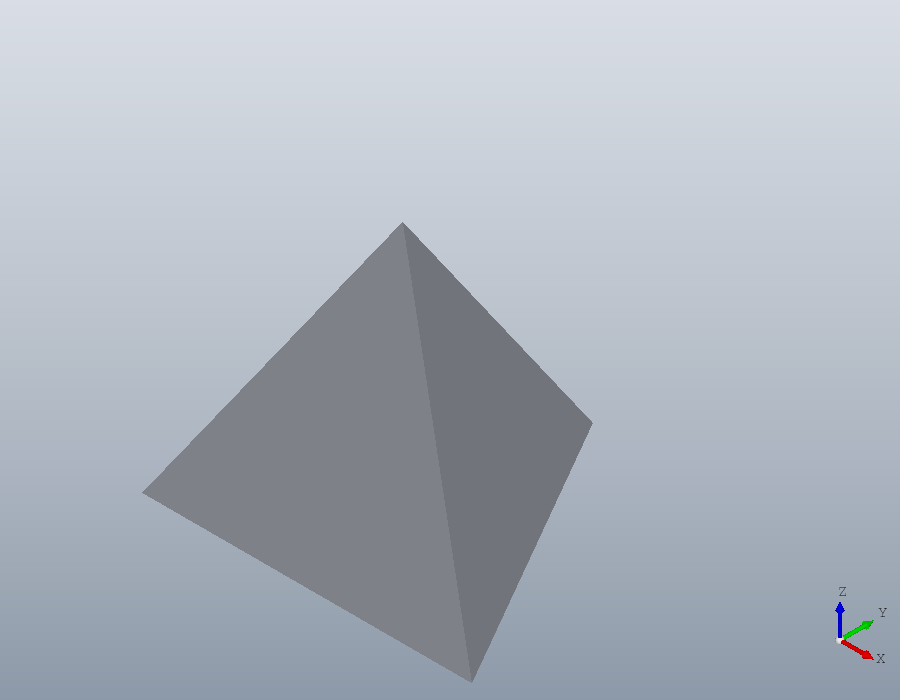
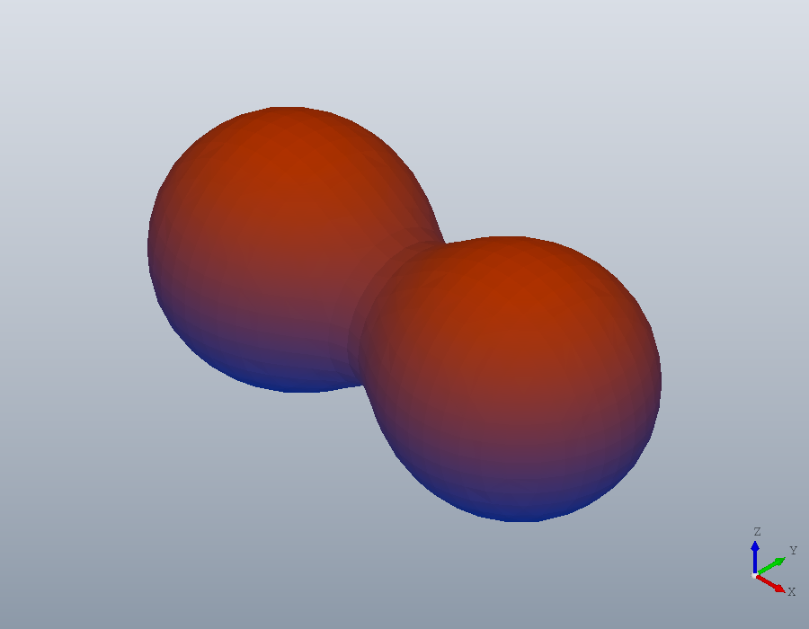
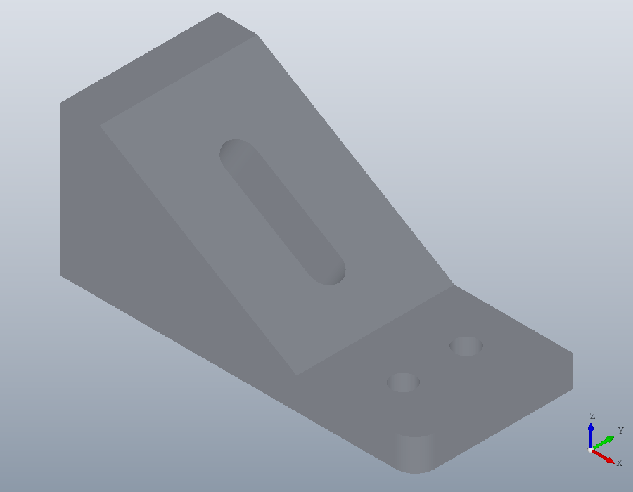

Meshes
A triangle mesh is how a slicer, a scanner or a download hands over a shape. This tutorial makes meshes, colours them, saves and reads them, cuts them back into regions and takes them into booleans.
A mesh from vertices and faces
polymesh.Mesh takes the corners as an N-by-3 matrix and the triangles as rows of three indices into it. A tetrahedron needs four of each. The mesh is closed, every edge shared by two triangles, so it encloses a volume.
V = [0, 0, 0; 30, 0, 0; 15, 26, 0; 15, 8.7, 24.5];
F = [1, 3, 2; 1, 2, 4; 2, 3, 4; 3, 1, 4];
M = polymesh.Mesh (V, F)
isclosed (M)
volume (M)
show (M);M =
polymesh.Mesh: 4 vertices, 4 triangles
ans = 1
ans = 3185
A mesh from a surface Octave computes
isosurface returns a struct with the fields vertices and faces, the form patch takes, and the constructor takes it as it is. Two blobs joined at a waist:
[x, y, z] = meshgrid (linspace (-20, 20, 41));
v = 1 ./ ((x - 8) .^ 2 + y .^ 2 + z .^ 2 + 1) ...
+ 1 ./ ((x + 8) .^ 2 + y .^ 2 + z .^ 2 + 1);
B = polymesh.Mesh (isosurface (x, y, z, v, 0.025))B =
polymesh.Mesh: 1750 vertices, 3496 trianglesColours
A mesh carries a colour for each vertex, VertexColour, or for each triangle, FaceColour, as rows of red, green and blue from 0 to 1. Here each vertex is coloured by its height, blue at the bottom and red at the top. In the viewer the key C turns between the colours a mesh has.
h = B.Vertices(:,3);
t = (h - min (h)) / (max (h) - min (h));
B.VertexColour = [t, 0.3 * ones(size (t)), 1 - t];
show (B);
Moving, turning, mirroring and scaling return a new mesh, as every method of the package does. bbox gives the extent, and its second output the size along each axis.
B2 = scale (rotate (B, 90, [0, 0, 1]), 2);
[~, L] = bbox (B2)L =
27.034 58.271 27.034Files
A part from a CAD program reaches a slicer as a mesh. tessellate makes one of a solid, here a plate with a bore, and write saves it in the format its extension names: STL, OBJ, PLY or 3MF. polymesh.read reads all four back, and every one keeps the mesh whole.
S = solid.extrude (geom.Region ([0, 0; 60, 0; 60, 30; 0, 30], ...
{[22, 15, 1; 38, 15, 1]}), 8);
T = tessellate (S, 0.05);
files = {'plate.stl', 'plate.obj', 'plate.ply', 'plate.3mf'};
for k = 1:numel (files)
write (T, files{k});
R = polymesh.read (files{k});
printf ("%-10s %d vertices, %d triangles\n", files{k}, ...
numvertices (R), numfaces (R));
endforplate.stl 88 vertices, 176 triangles
plate.obj 88 vertices, 176 triangles
plate.ply 88 vertices, 176 triangles
plate.3mf 88 vertices, 176 trianglesSTL repeats every corner for each triangle that uses it; polymesh.read welds them back into one vertex, so the counts agree.
Cutting a mesh
section cuts a mesh with the plane of a geom.UCS, as it cuts a solid, and returns the cut as regions. The cut of a mesh is made of its facets, so the bore comes back as a polygon of straight segments.
C = section (T, geom.UCS ([0, 0, 1], [0, 0, 4]));
C{1}.Holes{1}ans =
geom.Path: closed, 40 segments, 0 arcs, 0 splinesfit turns the segments back into lines and arcs where they follow them within a tolerance, a thousandth of the region's size by default. The bore is two arcs again, a circle, and the outline four straight sides.
R = fit (C{1});
R.Holes{1}
R.Outlineans =
geom.Path: closed, 2 segments, 2 arcs, 0 splines
ans =
geom.Path: closed, 4 segments, 0 arcs, 0 splinesA mesh with a gap
A mesh from a scan or a careless export may have holes in its surface. Taking away one triangle of the bore makes one here. The cut through the gap no longer closes: section returns what it can make into regions, the plate without its bore, and the rest in a second output, as chains of points.
c = (T.Vertices(T.Faces(:,1),:) + T.Vertices(T.Faces(:,2),:) ...
+ T.Vertices(T.Faces(:,3),:)) / 3;
[~, k] = min (sum ((c - [30, 7, 4]) .^ 2, 2));
G = polymesh.Mesh (T.Vertices, T.Faces([1:k-1, k+1:end],:));
isclosed (G)
[C, OPEN] = section (G, geom.UCS ([0, 0, 1], [0, 0, 4]));
C{1}
numel (OPEN)
gap = norm (OPEN{1}(1,:) - OPEN{1}(end,:))ans = 0
ans =
geom.Region: an outline of 4 segments, 0 holes
ans = 1
gap = 0.6277The gap is one facet wide. A 'Tolerance' just larger than it joins the ends and closes the bore again, and fit makes it round. Keep it small: one much larger than the gap merges points of the cut and coarsens it.
C = section (G, geom.UCS ([0, 0, 1], [0, 0, 4]), 'Tolerance', 0.7);
R = fit (C{1});
R.Holes{1}ans =
geom.Path: closed, 2 segments, 2 arcs, 0 splinesMeshes in booleans
solid.polyhedron makes a solid of a closed mesh, so a mesh takes part in booleans like any other shape. A hole through one of the blobs:
P = solid.polyhedron (B);
H = subtract (P, solid.cylinder (3, 50, geom.UCS ([0, 1, 0], [8, -25, 0])));
show (H);
How fine a tessellation is
The second argument of tessellate is how far, in millimetres, a triangle may stray from the true surface, 0.01 by default. No triangle spans more than 20 degrees of a curve either, which is why the two coarser tolerances give the same mesh of this plate.
for tol = [1, 0.1, 0.01, 0.001]
printf ("%6.3f mm: %d triangles\n", tol, numfaces (tessellate (S, tol)));
endfor 1.000 mm: 160 triangles
0.100 mm: 160 triangles
0.010 mm: 376 triangles
0.001 mm: 1144 triangles